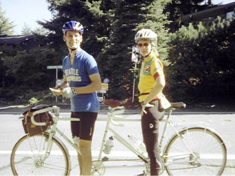
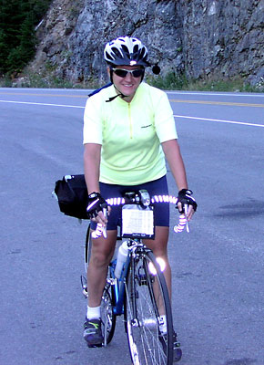
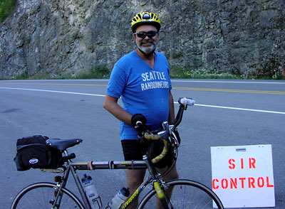
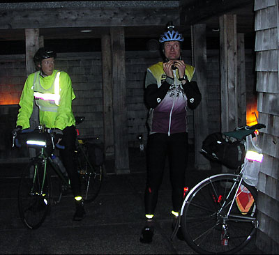
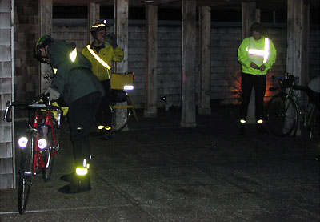
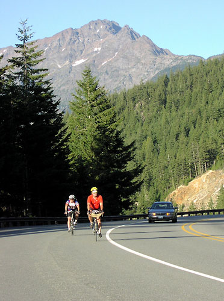

Volume 7 Issue 5 - September/October 2002
In This Issue
SIR 2002 100 km Results - Sept. 21, 2002
The 2002 Mountain 100k - Jan Heine
SIR 200 km Brevet Results - Aug 3, 2002
1000 km Ride Report - Paul Johnson
Fall 600k Brevet - Amy Pieper
SIR 1000 km Brevet Results - Sept. 12-17, 2002
1000 km Ride Report - Bill Strachan
400k Summer Series Brevet - A Slow Riding Novice's Perspective - Vic Ringkvist
Planning Ahead for PBP
Road Snippets
SIR Membership Grows!
SIR has grown to 93 members as of October and we've had great turnouts at all the brevets both Spring and Summer/Fall. It's wonderful to see so much enthusiasm and it looks like we should have a large contingent for PBP in 2003! An excellent goal would be to have all SIR members there finish 100% and send our PBP ranking to the top.
Remember that all SIR info is distributed through the SIR email list on a regular basis, and the traffic is low, so sign up and don't miss out! To subscribe go to http://www.phred.org/mailman/listinfo/sir.
Wool Jerseys
The wool jersey order won't be shipped till November, but they are done!
SIR Members only: SIR roster available upon request. If you would like a copy of the roster sent to you, please contact Anne Marie McSweeney at membership2004@seattlerandonneur.org or 425-868-6796.
The SIR Mountain 100 km Populaire results:On a sunny day, 13 people showed up at the start, including 3 new riders and a visiting randonneur from Toronto, Canada. 11 bicycles and one tandem took part.
Unfortunately, two of the new riders did not reach the first control at km 8.6. I wish I had told people that the first hill is the worst (or best - depending on your point of view), in case that they were discouraged by the relentless grade of Zoo Hill.
The course had to be modified because a bridge had been removed for replacement. This caused a regrouping as everybody backtracked for 7 km to take an alternative route. Fortunately, all riders still on the road were redirected. Almost all riders regrouped at Sandy's Bakery in Carnation (km 86). Everybody finished within 32 minutes of each other, an amazing feat on such a challenging course. The result was a little party on top of Mt. Olympus Drive. Two little boys selling snow cones provided refreshments.
It was nice to see all participating SIR members (and visiting randonneurs) riding so strongly.
Thanks to Kent Peterson for doing most of the organization (the hard work especially!).
| SIR 2002 100 km Results - Sept. 21, 2002 | ||||||||||||||||||||||||||||||||
|
|
| ||||||||||||||||||||||||||||||
By Jan Heine
The Seattle International Randonneurs are known beyond the region for their liking of hilly courses. So it was only a matter of time until a true "mountain brevet" was created - by Kent Peterson in 2001. For 2002, the course was refined with the addition of another hill to bring the elevation gain to somewhere around 5000 ft (1700 m) - not bad for 110 km.
The visit of Jaye Haworth from the Randonneurs Ontario was a good excuse to try the course on a tandem. An old Jack Taylor was dusted off, and on a bright Saturday morning, we set off from Ballard to Issaquah. The 42 km warmup was nice, and we arrived at the Park & Ride to find co-organizer Kent Peterson already in place and handing out route sheets and brevet cards. Then Kent took off to man the first two controls (designed to be on opposite sides of the road on Cougar Mountain).
At 9 o'clock sharp, 11 bicycles and one tandem left the parking lot and headed toward the first climb. After a minor mishap - the chain wouldn't drop into the small chainring, we were on one of the hardest climbs the region has to offer. The tandem climbed surprisingly well - Jaye must have been too impressed with the scenery to notice the grade. The sun coming through the trees created wonderful patterns of light and shade on the road that winds its way up the hill. It is a wonderful climb, and this early, there was not a single car on the road. For a short while, we climbed with Mark Vandekamp and Peter Peterson, then pulled ahead. A new rider passed us climbing smoothly. He crested a few lengths ahead of us and waited for us. After a quick descent, we reached the first control, then headed downhill toward Lake Sammamish. The new road with no cross streets and smooth pavement allowed us to let the tandem roll until we reached 89 km/h (56 mph). By now, we had lost our companion who had been unable to hold our wheel at these speeds. We turned onto Newport Way and soon headed up Cougar Mountain for a second time. This climb is a lot shorter and less steep, and soon we reached the second control, once again manned by Kent Peterson.
A quick undulating road toward Coal Creek Parkway followed, past lovely stands of trees and less lovely new developments. The rolling roads toward the Maple Valley were nice as always, while the descents were much faster than I remembered from my pre-rides of the course. We turned onto the little roads in the Maple Valley, but had a hard time keeping the speed above 28 km/h. The road seemed level, and only later did we find out that in fact it was a false flat... After 7 km, a surprise: The bridge across the river was being replaced that weekend and thus was closed. The workers were rather amused with our plight and suggested we might want to wade the river. Or turn around, ride back 9 km and take the next bridge. We turned around and found that the road in fact did descend - explaining our slow speeds in the other direction. After about 20 minutes, we encountered the first riders. We told them to join us on the detour. By the time we reached the last turnoff, we had collected all SIR members doing the ride, causing a nice regrouping. Only the three new riders were left unaccounted, so Jaye and I decided to wait and direct them if they appeared, while everybody else continued on their way.
While we waited, a couple on bikes stopped and asked about our tandem, tandeming and randonneuring in general. On a day like this, we could say nothing but good things about any of these topics. After 25 minutes, we decided that anybody showing up later would not make the time limit at the next control anyhow, and took off in pursuit of the other riders. I had dreaded 9 km along the busy Maple Valley Highway, but there was a pleasant trail alongside until we reached the construction for the bridge. The remaining kilometers on the highway were not bad, and soon we turned off on Cedar Grove Road for another little hill. Suddenly, the fast climber, who had been missing for a while, appeared behind the bushes on the roadside and asked whether he was back on course. Without a computer or a holder for the route sheet, he had got lost several times and was happy to ride with us to free him from the burden of navigation.
Tiger Mountain was a pleasant climb, being neither steep nor particularly long. The descent, with a few challenging turns, was exhilarating at 70+ km/h. In fact, two of those turns were a bit tighter than anticipated - my pre-rides on a single bike never got up to these speeds. We made it around fine, but not before eliciting a few gasps from my stoker. Apparently, Ontario does not have hills like we do around here... Into Issaquah, we had a headwind, but on a tandem, the effect is much-reduced compared to a single bike. After a quick stop for water and restrooms, Issaquah offered its usual traffic jams, exacerbated by non-working traffic lights and a fire truck making its way through the mess. Somehow we managed to reach Black Nugget Road, where we had another opportunity to use our smallest 28-30 gear. Here we started to catch up to the other riders. After some busy roads on the Sammamish Plateau, we soon headed on quiet backroads toward the Snoqualmie Valley. The little roads along the Snoqualmie Floodplain were wonderful as always, the tires singing of the rough pavement. Almost everybody had regrouped at Sandy's Espresso in Carnation when we arrived - a welcome stop after some hard work.
While it was nice to sit on the sunny porch, we knew Kent was waiting at the finish, eager to be relieved. So we took off, tackled Tolt Hill, descended toward Redmond-Fall City Road, then ascended Duthie Hill. Back into Issaquah with more traffic jams, then the ascent on Mt. Olympus Drive. This road is mindbogglingly steep, and I felt my weight shift off my arms as my upper body was almost vertical due to the grade. Yet the tandem made it up fine, and soon the grade relented. After some more climbing, we reached the top and Kent Peterson, who informed us that we were the first ones there. I suspect that with all the detours, Kent had been waiting for a while. He signed our cards and took off down the hill. We decided to move the finish a few blocks up the street where two boys were selling snow cones. Within only 32 minutes, all other SIR members arrived - an amazing feat on such a challenging course. This led to an impromptu party, and as we left, we heard the snow-cone-selling boys yell to their envious neighbor that they had made $ 3.75 in less than one hour!
Unfortunately, none of the new riders managed to finish. Two riders never made it to top of the first hill, while the third got lost again and never reached the finish. I hope they will be back for one of our less challenging rides. Most of all, it was nice to see our randonneurs ride so strongly.
By Paul Johnson
I started my 1000K brevet on Thursday morning, September 12th at 7:00am. I finished on Sunday morning at 7:28am. I had a great time and it went something like this:
I had to work up in Cle Elum on Wednesday so decided to stay in a motel near the start that night, rather than get up early to fight the I-5 drive to get to the start. It was a good decision, I usually don't sleep real well in motels the night before an event but I was pretty tired and had no trouble getting to sleep. In fact, I struggled a bit to get ready the night before. I had the bike pretty much ready, new tires and a new handle bar bag, everything else seemed in pretty good running order. I had measured and bagged my sport drink, couldn't think of much else to do to prepare so set the alarm on my cell phone and turned out the light.
I was up and ready in plenty of time. It was clear and cool out, I new it would be a warm day but decided to start with a long sleeve jersey, it turned out to be a good decision.
There were 6 of us at the 7:00am start, two friends from Olympia elected to start at 9:00, I was sure I would see them later, they are both stronger riders than I. Right away we broke into 2 groups of 3, the front three were faster and we never rode with them again though did come across them at he controls and along the route.
Redmond to Arlington (Control#1) 14.1 mi., 1680 ft climbing, 1800ft descending, time, 1:00
This was a pretty easy stage, the weather was pleasant, traffic not too bad and most of the climbing was gradual. The control was a Chevron gas/convenience store, there was a McD's inside, I got a ham, egg and cheese bagel, let the junk food begin! Time into Arlington 8:00am.Arlington to Skykomish (C#2) 84.4 mi. 2950 ft up, 2110 ft down, time 5:27
This was more serious. Most of the climbing is rollers, short steep pitches. I've ridden some of this going the opposite direction. It was now hot, but most of the route was through forest, and farm land, really pretty. I drank a lot, both water and sport drink, I didn't go fast but was steady. I rode with Peg, a woman I have seen on other brevets, we had separated from Bill, a randonneur from NYC . Somewhere around Gold Bar I lost Peg, I drop her on the descents (weight can have its advantages) but in this case we were climbing and she should have been right with me. I fear she's had a breakdown and I just didn't notice, but I hope she just stopped to go pee. I stopped and waited a bit, but she didn't show. Since I'm close to the control, I elect to go on, hoping she will come along shortly. Mark Thomas the Brevet administrator went past in his car and stopped to take pics, (please Mark, this really is not my best look!) I asked if he has seen Peg. He had not, but agreed she may have stopped to take a leek. Up ahead the road is blocked for bridge replacement. I wobble past the long line of cars, RV's and commercial semi's that have passed me. I'm sure they don't appreciate me crashing the line. At the head of the line I pulled over into the shade and drank, ate cliff bars and hammer gel. When we started again, I let the cars go ahead, hope the noticed. Mark was again in the line of cars and waved me in front of him, as he passed he slowed and let me know that Peg had had a flat, that she is 3 minutes behind me and in good shape. I'm relieved to hear it. I felt good into Skykomish but the first real test was just ahead. Time into Skykomish, 2:27pmSkykomish to Leavenworth (C#3) 51 mi., 3440 up, 3210ft down, time 5:12
As I was leaving Skykomish Peg pulled in. I told her I was leaving; we both knew she would reel me in before the summit.This was it, Stevens Pass, in the heat of the afternoon! It is only 16 miles from Skykomish to the summit and ski area, but that is where almost all of the 3440 ft of climbing is. The granny gear got a work out, the combination of sweat and sunscreen dripping from my body (did it all have to run into my eyes?) had to leave a drippy trail that enticed the vultures. I just kept the pedals turning over. Peg, bill and I leap frogged to the summit. Despite filling my bottles, I was almost completely out of water when we reached the summit. Almost as an apparition, there was Mark, (more pics, we'll have to talk!) and sitting on the trunk of the car is a large ice chest filled with sandwich makings of every kind, cold drinks, water, Gatorade, and bags of fresh fruit, chips and cookies. This club really knows how to support its riders! I know Bill was impressed. I had a coke, some potato chips, and a couple slices of lunch meat, then filled my bottles and was off.
Down the back side of Stevens Pass to Leavenworth was wonderful. It's a lot longer and not as steep but really pretty and on the SHADY side of the mountain. Along the Wenatchee rive I could see long dark skeins of salmon in the deeper pools returning to spawn. The scars on the mountains from the forest fires of 96 are starting to heal, but the acres of black trees remain mute testimony to the power of nature. We had a long break in Leavenworth. I ate most of a foot long Subway sandwich, turkey, cheese, saved some for later in the evening. We prepared for night riding. Bill and Peg bundled up in jackets, arm warmers tights and leg warmers. I remained in my sleeveless poly jersey and shorts. I'm sure Bill thought I was already over the edge, but Peg had heard that I am a bit warm-blooded. The night air was warm; it was a dark evening, only half a moon, but plenty of stars. Time into Leavenworth, 7:39pm.
Leavenworth to Chelan (C#3) 35 mi., 1420ft up, 1570 ft down, time 4:14
Traffic on Hwy 2 was not too bad; generally a slight descent and we were making good time. The 3 of us left together. At one point, with Peg in the lead we ran into a rumble strip. I was quite a surprise and did what it was supposed to. Even though we were not drunks, it definitely woke us up. It was the first rumble strip Bill had ever been on, I learned some colorful New York language! Somewhere along the way as I was leading Peg disappeared again. I asked Bill if he noticed when she dropped off. He didn't. I told him I was going to stop and wait for he, he elected to go on. I waited for 5 minutes, when she did not show I turned around and found her only a couple miles back fixing another flat. We go that finished up and then were on our way. At Wenatchee we turned north and headed up the Columbia River. I was worried that we might have a strong headwind coming down the river; fortunately it was not blowing much at all. More climbing here as we a re now going up river. I told Peg to feel free to ride on at her own pace, I knew I would make it but probably not as fast as her. Into Chelan, I found Peg at the all night Chevron gas/convenience store. I went in, went to he bathroom, got my card signed, bought some potato chips and in the drink case found a Starbucks espresso and cream! Rocket fuel for me! Time into Chelan, 1:25 am.Chelan to Pateros (C#5) 19.4 mi., 700 ft up, 920 ft down time 2:17
Sleep deprivation is starting to set in, the espresso is working wonders, I felt really good all things considered. 20 more miles and sleep! I was surprised the Dave and Brian had not caught us yet, but I plugged along. Even though this stage is not so long, I find myself checking the odometer and the road signs, I really want to get to bed. A sign, Pateros 3 miles ahead, and I can see the lights of the little burg, and suddenly, my back tire feels squishy. No time is a good tome to have a flat, but this seemed cruel. I gave it a thought, but 3 miles is too far to walk, so replace the tube in the dark, I've done it before and will probably do it again. As I put the wheel back on I see a couple headlights approaching. Like Livingston on the Nile Dave rides up and hails me, "Dr. Codfish I presume!" They help me finish it off and we ride into the control together.Mark has rooms for us and a full spread available, and we all start eating everything in sight: Bananas, grapes, muffins, Cup o'Nooldles and top it off with a P&J Sandwich and I'm ready for my turn in the shower and off to bed. Time into Pateros 3:42 am. I was in bed by 4:30 up and eating again at 6:00am and riding by 6:10 am. About 1 _ hours of sleep.
Pateros to Winthrop (C#6) 41.8 miles, 1590 ft up, 570 ft down, time 3:45
Up in the morning and once again Mark is scurrying to support us, filling bottles, making oatmeal, bagging Newtons, cookies, gorp, P&J's, you ask for it he probably has it. Take care Mark, not get any of that Bag Balm on my toast though ok?Now it gets tough. I'm starting to feel the fatigue of yesterdays 223 miles and 1 _ hours of sleep and its only 7:00am. The route is up the Methow River, to Winthrop and ultimately over Washington and Rainy passes. It is clear and sunny, today will be hot, but at the start, we are pedaling uphill into a head wind. Right away I am alone and end up riding the complete 40+ miles to Winthrop solo. I was into Winthrop at 10:55; I had iced tea on my mind for the last 20 miles. I had to settle for iced water.
Winthrop to Marblemount (C#7) 67.3 mi., 5110 ft up, 6500 ft down, time 9:22
This will be the hardest stage by far. It is the middle of the day, it is very hot and these are two of the hardest mountain passes to climb. I rode Marblemount to Winthrop and back in the spring, so I know what I am in for and the prospect is one that challenges my confidence. Mark has made a point on the route sheet to direct us to the Lone Fir campground for water. Clearly, it is so hot, so hard and so long that we will all run out of water on this segment and it you don't get water at Lone Fir (6 mi below Washington Pass you probably won't make it. I ran out of water before the campground, I was so hot and so dehydrated that I drank the snow melt in the creeks, (less than a bottle). When I was young you could safely drink from the mountain streams here, but these days it's a foolish thing to do. I guess I will watch my health in the next few weeks for signs of giardia.The slow grind in these climbs is an incredible drain on the mind. I just kept thinking, "I've got to get over this mountain!" I would resolve to strand and climb, but it would only last for a few pedal strokes. I finally made it to the campground and figured out I was seriously dehydrated. Peg was leaving as I pulled in, "which way to the water?" She points, "That way, about a tenth of a mile." I filled my bottles and sat in the shade of a tree for a drink, and in rapid order I drank two complete bottles of water. I was fearful this might cause me to hurl, but my body said drink, and I obeyed. I also ate a cliff bar and took a couple portions of gel. As I started coming out of my heat induced stupor I realized my face, neck, arms and hands were salt encrusted and I was not sweating. I took a couple electrolyte capsules and resolved to take them more frequently. Mark had told me in extreme conditions that he will take two an hour. I decided that this was extreme.
As I left Lone Fir Brain pulled in, "Where's Dave?" he asks. I told him I had not seen him, he probably passed me so fast I didn't even see him, the guy loves climbing, ...it's not really a sickness.
Only 6 miles to the summit of Washington pass and here, looking up, you can see the road with one mean switchback all the way to the summit, Liberty Bell towering above.
Over the passes and then down the other side, my legs were spent. I wanted to put some power to the pedals to make up time on the descent, but didn't have it. My legs were like rubber. I decided to stop for a minute and eat. I leaned my bike against a guard rail and shared a P&J sand, with a camp robber who came gliding in to see what I had, and drank a bottle of sport drink. It helped and after 10 minutes I was back on my way and making time.
Before I reached the Ross Lake Overlook I see in a turnout the familiar SIR sandwich board with the red blinky light and there's Bill Dussler set up at a secret control. Bill has really pulled out all l the stops. There are lawn chairs set out and, a camp stove set up and a cooler full of good stuff. Peg and Bill are just leaving. Chef Bill reviews the menu and I order a cup of coffee, a hot cup 'o noodles, and begin munching alternately on turkey breast lunch meat and delicious potato chips. Shortly after Dave and Brian roll up. Apparently Dave had stopped along the way for a short nap.
After eating I felt really ready, it is starting to cool in the mountains, the others put on clothes but I know the cool air will feel good and I also know that as we drop in to the valley the air will warm up. We depart together but Brian wants to stop for more clothes. I go ahead; we all know that they will catch me soon. Below Newhalem, it turns dark very fast. I put on lights and head out; I thought they would have caught me by now. A few moments later they come along side. The three of us pace in the last 14 miles to Marblemount in the dark. Brian is flying, It's all Dave and I can do to hang on, but nobody complains, I figure I can't do this all night but it feels really good for now. We trade pulls and streak through the night, this feels soooo good! We roll into the control in Marblemount at 8:17. Peg and Bill are there. This has been the hardest stage, but also the most beautiful and it is a relief to know that the mountains are behind us.
Marblemount to Arlington (C#8) 58.8 miles 650 ft up, 1010 ft down, time 5:43
Its night again, Bill left on his own and the four of us determine to try to ride this night leg together. We have talked about forming a fleche team and this is a good chance to see how we fair riding together. I've ridden a lot with Dave and Brian, and after riding the last day with Peg I think we will be a good fit.Years ago I lived here in the Skagit so know the route. I'm surprised how good I feel, and once we are away we are really rolling along. It is cold at the start but I know within 15 minutes I will be steaming again.
At Rockport somebody gives a yell, later we start worrying that it might have been Bill. The moon light on the Sauk River through the trees is beautiful. The road is MUCH better than it used to be, Tarheels getting better roads these days?
We stop for a break in Darrington about 30 miles from Arlington, where Mark has rooms for us. Mark mentions that he has not seen or heard form Bill, my guilt grows a bit. People make changes to their gear, grab some food, and head out. We have to get down to Arlington and then turn around and ride back to Darrington to complete the stage. This is going to be a long night, but no mountain and some how I feel fresher than I expected. We continue to ride together, and roll out the miles without incident. As we near Arlington We pass Bill, who has already turned and is headed back to Darrington. We got into Arlington at 2:00am; I had a burrito, another espresso, a banana, potato chips and tomato juice. Everyone is in great spirits, we are all laughing at how crazy this is, but that we are doing it. We are out the door and on our way back to Darrington and BED in lass than 25 minutes.
Arlington to Darrington (C#9) 31.8 miles, 770 ft up, 320 ft down, time 3:29
It's a fair amount of rollers, coupled with gradual climbing (now we're heading UP the Stillaguamish River). I want to go faster, I think we all do but none of us has an up hill sprint in our legs, we ride alternately by twos or 4 abreast and talk softly as we ride. At 4:00 in the morning on a country road, traffic is not a problem, the drunks have all gotten home or in the ditch. We roll into Darrington at 5:30. Roust Mark from bed, plan the start time tomorrow and shower and hit the sack. We talked a little about our ride; I mention that it is fleche training with out rain. "If there's no rain, it's not fleche training" Mark counters. I'll get 3 hours of sleep tonight! I collapse in bed and am immediately asleep.Darrington to Concrete (C#10) 27.2 miles, 480 ft up and 820 down, time 2:31
Morning comes and I am a little disoriented (a little?) in getting ready to ride. Dave and Brian do not look good, Dave is suffering foot and butt problems, and Brian has stomach trouble. Peg looks fine, and I know I am ready to roll. We agree to take off and hope to see Dave and Brian down the road. As we are leaving at 10:00am, the first of the 400K randonneurs who started early this morning roll in to the control. We will be seeing them on and off for the rest of the ride, there are 29 of them. It is a beautiful leg back out to Rockport and I feel great, must have been that wonderful oatmeal Mark made me. The morning in the forest along the Suiattle and Sauk Rivers is wonderful and Peg and I make good time. I contemplate, I have gone 442 miles and had a total of 4 _ hours of sleep. My hands and feet are sore and my rear end is REALLLY suffering, but I still feel like I have miles in me. Shortly Brian comes along; he looks a bit ashen but is riding strong. He says Dave stopped back at the Suittle Bridge, not a good sign. We move on out and get on Highway 20. Up a hill they drop me but over the top I pick up speed to catch them... And hit a rock at 30 mph. I know there is not a lot of time for me to get into the control, but hey this a flat, not brain surgery and I've fixed tons of flats, on the front no less! I get the old tube out and note the pinch holes; figure there is nothing in the tire so put in a tube Mark gave me in Pateros. Get everything put back together and start pumping. Nothing! Is my pump screwed up? Did Mark give me a bad tube"? Yikes, now I'm panicking! I know the time on this control is drawing near. I frantically take the tube out and inspect it. A hole! I also take time to look at the tire this time, and see a big gash in the side wall! Crap, I can't use this tire like this, and because I put brand new tires on for this ride I decided I didn't need to bring my spare!! Bad decision, I whip out my tools and supplies and quickly make a boot out of two layers of clear frame tape. Dave rolls up and can see how frantic I am. H e tries to calm me down, and it's working until he tells me I have over two hours to get to Concrete, ... (He's forgotten I started 2 hours earlier than him! I focus on the task at hand, he helps me get the tube in with the boot in place, get things back together and pumped. Seeing I have it together Dave takes off and I start jamming stuff in my seat bag and jersey pockets, I gotta get going! My heart was racing and I took off like a shot ...for the first _ mile, then the fatigue wraps it's tentacles around my legs, squeezes the breath from my lungs and I am back to my plodding 13 miles per hour. As I came into the control all the 400 K randonneurs are looking, Peg and Brian are there waving me in. As I roll up I ask Peg if I'm late. "No" she replies and grabs my bike, "You have 6 minutes, get in there and get your card signed!" I rush into the convenience store to find a line of people waiting to pay for gas and get snacks. My heart sinks. I get in line (one of the 400K guys waves me in) the store guy signs my card and notes the time as 12:41. The cutoff for the Concrete control is 12:41, I made it! This calls for a celebration, a bottle of cold water, a chicken crispito, a broasted chicken thigh and some spicy JoJo's, not sure this is what Lance and Jan would be after, it works for me.Concrete to Whitney (C#11) 37.2 miles 160 ft up, 340 ft down, time 3:26
This should have been a great stage for us, flat, a little bit down hill down the Skagit Valley, but we all suffered. I think we were feeling the cumulative fatigue, it was very hot and we had a strong, steady head wind. Peg was very quite, Brian looked like a very sick man, Dave seemed to have gotten better but had trouble getting comfortable in the saddle. I felt ok, and tried to take long pulls to relieve Brian and Peg. Brian stopped at a park in Sedro Wooley, said he would see us at the control, and Dave went ahead in search of coffee. We got into Whitney at 4:07. A little faster than I expected but feeling pretty used up. Dave was there and was getting ready to leave, Brian showed up a little later and said he was going to abandon. He is feeling lightheaded and dizzy, and in no shape to ride father. Peter McKay comes to pick him up from the next control. Brian will check into a nearby motel, and his wife will come to get him. 122 miles to go, just a double metric century, I really feel bad for Brian, over 500 miles in the bag, and not much more to go, but I know he's making the right decision, I've been there.Whitney to Bellingham (C#12) 24 mi 770 ft up, 710 ft down, time 2:53
This is a pretty stretch along Chuckanut Drive; you look out on the Straight of Juan De Fuca and the San Juan Islands. Peg and I negotiate this well. At B'ham, I have a chicken and Cheese Burrito, a banana and a cliff bar. We put on lights and turn back south, 98 miles to go, its 7:30 pm. I think back to my days in the woods; Dime night at the Kulshan in Fairhaven, then weave back down Chuckanut to get home. Man how did I ever survive those crazy timesBellingham to LaConner (C#13) 28.8 mi. 60 ft up, 80 ft down, time 3 hrs.
Down Chuckanut I'm ok, but my neck is getting very sore, and I'm having trouble holding my head up! Is this going to be my problem? I stop once we get to the flats, tell Peg to go on, I need to get on more clothes and eat, I feel a little bonk coming on. I drink another espresso and cream, wolf down a P&J, put on my long sleeve Jersey, booties and my long finger gloves. I feel better but still have trouble holding my head up. Peg and I hook up at Hwy 20 and head into LaConner. This is farm country on the Skagit flats, it's flat but it is also some of the worst chip seal I have been on. We Roll into Laconner just as the store is closing, the alternate control is the tavern, Peg's not sure where it is, I tell her; look around, find bright lights and that's the tavern, drunks are attracted to beer signs like flies to honey.We find it and go in. Since the store just closed we are the first randonneurs the tavern folk have seen. I'm sure they are wondering if Halloween some how snuck up on them. The woman behind the bar asks if we're lost. I step up and tell her no; actually we are right where we want to be. After a bit of explanation we order a turkey and cheese sandwich, potato salad (it was incredible!) and cokes, and she graciously signs our brevet cards.
These folks sort of take a shine to us and start asking what t is we are up to. The resident drunk at the pool table is fascinated. He shakes my hand about 5 times. I head for the bathroom, when I come out, there is a crowd in the middle of the bar, I don't see Peg, this could be trouble. As I get closer I see Peg has her brevet card and que sheet out and is explaining randonneuring and this ride, they are all nodding and ooohing and aaahing,...I'm relieved. Just a bunch of really nice folks, they wish us well and we are away about 10:30.
Laconner to Stanwood (C#14) 17.3 mi,, 60 ft up, 80 ft down, time 2:36
This could be the low point for me. I'm so tired and my neck is so weak I can't help pull, Peg leads and I follow, I feel like I have nothing to offer and I know we are really dragging, she's obviously tired too, the farm roads are ba-a-aa-a-dd-d! We roll into Stanwood at 12:36. The control is another Tavern and this place is packed and hopping. Must be payday on the farm, the juke is blaring loud rock, and people there pay us little mind. The barmaids are rally nice; I get a cup of coffee, which helps. There are a lot of 400K riders here, they look like they are getting a little tired to and seem reluctant to ride out. Peg and I hit the road again about 12:45.Stanwood to Arlington (C#15) 15.9 mi, 110 ft up, 40 ft down, time 1:52
Now we are dragging, I tell Peg I know I will make it and if she wants to ride away at her speed to go. She sticks with me. Shortly a group of 6 of the 400K riders come along; they are moving right along and pass us. I ask Peg if she thinks she can stay with them, she says yes, how bout me? "I think so", and tell her to catch on and hang on, and off we go. Riding with these guys REALLY helped us get through the last stages. We are into Arlington at 2:28am, this was the first control at the beginning of the ride, it seems so long ago. Peg and I roll out about 3:00am, the 400K riders wait longer, I'm sure we will be seeing them soon; there are climbs ahead and at this point in the ride, they loom like Mt. Ventoux for me.Arlington to Finish (C#16) 35.4 miles, 1790 up, 1670 down, time 5 hours
This is another test. My body is exhausted, I am riding alone and now I can only hold my head up for short periods, what a drag. I know I 'm going to finish, it is 35 miles and I have until 10:00am, I'll do it but it will be hard. 15 miles on, I stop to take a vivarin, it wakes me up a bit but really dries out my throat and gives me a bit of a stomach ache. 21 miles on Hwy 9, and almost no traffic, this can be a very bust stretch f road. I watch the 400K riders go by one by one, they are all a little wobbly, it's a good thing we have the road to ourselves. At 21 miles I turn off Hwy 9 onto Broadway; from here on it will be challenging as there are lots of up and downs and short segments of less than a mile. I'll have to navigate as well as stay upright. As I cross the highway, I notice red blinky lights in the bushes; someone says "There you are!" As my eyes get accustomed to dark I see lots of randonneurs lying around in the ditch. I say "What are you guys doing here?" They say, "Waiting for you!" Peg is there, I scold her for not going on the last 15 miles, she could have had a great time. She says "We've ridden for 615 miles, I'm not going to ride the last 15 without you."They ask if I want to sleep. I say I was thinking about it but want to get closer, just in case something goes wrong. They tell me to lie down, there are two riders behind me and we'll wait for them too. I drop in the dirt and though I don't think I slept, some say my snoring suggested otherwise
The other two show up, its 10 minutes later, I feel rain drops on my face. One of the 400k riders says, "Alright, let's finish this thing off." The "Let's" part of that really helps my confidence. We don't' ride in a tight group, but close enough that we can all see someone ahead at each turn, a blessing, as I don't have to navigate.
I rolled into Marks house at about 7:28 am I think. I will know better when I get me brevet card back. Mark gently steers us to the kitchen where there is a great spread. There are spent riders sleeping all around the house, it sort of reminds me of fire camp. "What'll you have Paul?" I survey the spread and say, "How 'bout a Cliff bar and some GU?" that gets a few laughs. I elect the beanie burger sauce on white rice (I really like rice and beans for recovery). After that it's off to a shower and then I flop on an empty couch for a couple of hours of deep sleep. When I awake most of the riders have left, there are three or four in the kitchen. Chris, Mark's wife sits me down and gets me coffee, scrambles some eggs and serves up toast and jam. Life is good.
This has really been a great ride, All things considered I suspect things couldn't have gone much better, I thought I would feel worse, I am relieved to know I can do this distance, and already I am thinking about what I can do to cut my time.
I know I'll do it again,...but not too soon!
628 miles
22350 feet of climbing
72 hours, 28 minutes
By Amy Pieper
I started off on the 600k brevet with trepidation after having bonked badly towards the end of the 400k three weeks prior. I had packed my "suitcase of courage" with a favorable weather forecast, an interesting route, and lots of advice and encouragement from my husband (Robin), Mark Thomas, and other cycling friends. Also, under the tutelage of Kent Peterson, I had packed a wide variety of snacks hoping to keep my furnace in good working order throughout the 600k.
Signing up for the ride with Mark on the ferry I noticed that, once again, I was the only woman. I have yet to cross paths with Peg and look forward to meeting another gal that has enjoyed hanging out with this crazy gang much longer than I. Upon disembarking the small group of us promptly disregarded Mark's instructions and rode further up the street than he had intended. Still we managed to get connected and started off at 6:30am. Unlike the 400k it was still dark enough at 6:30am to warrant use of headlights. The roads were quiet at that hour and crossing the Hood Canal Bridge was a breeze. By this time riders were spreading out leaving Robin and me to set our own (slow) pace.
As we hit Highway 101 the car traffic started to pick up all the way into Port Angeles. I was beginning to imagine another 30+ hours of deafening road noise. After getting a bagel and our cards signed in Port Angeles it was back onto the busy highway but not for long. The road to Clallam Bay was very pleasant and began to set the theme for the rest of the day. I hadn't paid any attention to the elevation notes on the route sheet and had somehow convinced myself that this brevet would be somewhat flat. Since I have done a bit of riding on the Peninsula I'm not sure where I got that idea but I was soon reminded of the true terrain as we rolled up and down hill after hill. I think all of us except Ken and Wayne Harrington ended up at the control together where I slurped up some hot soup and refilled water bottles. Note: the nice thing about getting to the controls late is that some kind soul has already purchased a gallon of water and left it for later arrivals! What satisfaction to save $1.29! Ken had passed us before the Hood Canal Bridge and we would not see him again. As we rolled out of Clallam Bay we waved to Wayne H. heading in. That was the last time we saw him that day but would continue to play tag with Kent, Wayne Methner, and Bob all the way to Hoquiam.
The ride from Clallam Bay to the next control at Forks and from there to Kalaloch was uneventful. A nice quiet rolling ride. Since there were always riders ahead of us the folks at the controls were ready to sign our cards and we didn't even have to explain ourselves and our strange appearance. Kent had to fix a flat at Forks but still managed to get out and rolling ahead of us again. As we rolled into Kalaloch night was starting to set in and seeing and hearing the ocean waves roll in in the semi-darkness was really cool. Luckily the espresso stand was still open and I got a hot chocolate to sip as we chatted with Jon at the control. The volunteers really have to put in some long hours on these brevets and they are greatly appreciated, especially when they would rather be riding themselves.
From Kalaloch it was back inland just in time as a thick fog was beginning to descend on the coast. Highway 101 is REALLY dark! Robin and I were both feeling good and we rolled along pretty easily. After a bit we saw a red blinky light in the distance. Robin cannot resist a red blinky light and began to push the pace up immediately. With the prize in sight we soon caught and passed Bob only to spy another red blinky up the road. That made it a fun ride into Lake Quinault where we were once again treated royally by the control volunteer, Bill. I downed a nice salty cup-o-soup and chatted with the other riders. As before, Kent, Bob, and Wayne M. started out ahead of us. I think Robin did that on purpose this time to give himself red blinkies to chase into Hoquiam.
The road from Lake Quinault into Hoquiam is one we've ridden several times but I have to say it was a treat to ride it at night with barely a car in sight. Still, it was so dark I was thankful to be riding with Robin and not all by myself. The last blinky to be caught was Wayne M. as he pulled over to fix a slow leak. He said he had everything under control so we continued riding. At one point a car slowed down and the driver asked where we were going, how far we were riding, etc. It is always fun to share with the drivers what we are up to but I am a little leery when a car slows down next to us, especially at night!
In Hoquiam, Trent and Melinda had rooms, drop bags, and lots of food for us. Ken had already been and gone I think. We ate and chatted as the other riders all arrived. At about 2:00am we all headed off to our rooms and I was surprised to find out that no one else was even considering sleeping in as late as 7:00am! I hadn't even showered yet so by the time I hit the bed it was 2:30am so I was allowing myself a whole 4 hours of sleep! I was thinking this was bordering on the ridiculous and couldn't even fathom getting back up in an hour or so, or not going to sleep at all. I guess I'm still not into the whole rando mentality! With luck I never will be.
The next morning we got going at 8:00am and the only one riding on our schedule was Wayne H. so we played tag with him all the way to Kingston. The stretch from Hoquiam to Elma was flat which was a welcome change for my tired legs. For some reason the slow pace of Saturday became even slower on Sunday! Soon we were back into familiar territory again as we hit the stretch that we did on the 200k and that Robin did again on the 300k. The weather was quite lovely on Sunday and the riding went pretty well. Unfortunately about the time we hit Brinnon my stomach was starting to rebel and I feared another horrible bonk. A short mental breakdown ensued but I drank part of a soy energy drink I had been testing and managed to pull myself together on the long climb up Mt. Walker much to the relief of Robin. He had fallen behind me to keep me from stopping at the side of the road and giving up although what he thought he was going to do about it I'm not too sure!
One last control stop at Quilcene and we hit the long rollers headed to Kingston and the end of the ride. I started feeling pretty good again although you couldn't tell by the speed at which I was riding the hills. Crossing over the Hood Canal Bridge again was a little scary as there was much more traffic, it was getting close to dusk, and my brain really wasn't functioning fully. After that it was a pretty easy pedal into Kingston where Brian met us and signed and collected our cards just as a ferry was unloading. Great timing! We got on the ferry and bought some hot chocolate and munchies and congratulated ourselves on a successful brevet. The thought did occur to me however...okay, we've made it to Brest, now we have to turn around and go back...hmmm.
| SIR 2002 1000 km Results - Sept. 12-17, 2002 | ||||||||||||||||||||||||||||||||||
|
|
| ||||||||||||||||||||||||||||||||
By Bill Strachan
This was going to be like no other brevet I had ridden before. It was not to simply be a physical challenge but an emotional one as well.
I had successfully completed my fifth Boston-Montreal-Boston in as many tries. After talking with John Lee Ellis the following morning I determined that the week and a half to the Last Chance Randonnee was simply too short a recovery period to attempt it. My attention focused on Seattle. A 1000K brevet. Three weeks. It might be doable. I'd give it a shot.
There was a larger purpose at hand here though. In the Spring I had sent out, through the Regional Brevet Administrators and Jennifer Wise's good offices in the form of the Randonneur Newsletter, a request for riders to dedicate their brevets and medals to the families of the twenty-three New York City Police officers who had died on September 11 during the attack on the World Trade Center. Three I had known. One, a sergeant, had been a former supervisor. Mssr. Robert Lepertel, Directeur of the Audax Club Parisien, generously donated a full compliment of brevet medals in their memory. For whatever reasons, the American response was only a handful. I had one more chance to fulfill my obligation. Seattle was to be my singular opportunity.
I "harassed" Mark Thomas, the RBA, with e-mails. We had met during this year's BMB. A strong rider, friendly disposition and generous of spirit. "What was the route like? How did it compare to Boston? What was the altitude gain? Was three weeks enough time to recover? How did the climbs differ from Middlebury? Anything like Saxton River?" He was patient and informative. He assured me that it was attainable.
I made my travel plans. An early morning departure from JFK Tuesday, September 10, a brief stopover in Phoenix and on to SeaTac. King County Transit seemed bike user friendly. I scoped out my route to Mark's house where he was to offer me hospitality. Public transit worked pretty well even with my bike in my new Trico Sports Case I had purchased for BMB and a duffel bag. For the final couple miles in a taxi a newly minted citizen from Calcutta, who described himself as "American-Indian," deposited me on Mark's doorstep.
The next morning brought a startling surprise. The New York Times. Mark and Chris, his wife, subscribe to it. It brought the immediacy of the day to my attention. I was not sure how I was going to observe the Day of Remembrance. I knew I had to find some private time and space for myself to mourn, reflect, regroup and rededicate to my purpose.
We went to Mark's bike shop, Sammamish Valley Cycle, tuned up a couple things and traded water bottles. He got our New York Cycle Club's distinctively designed Lady Liberty with cycling helmet logo. I had already laid out my drop bags with clothing, supplements and some food. I was ready to go. I hoped. Between still being on New York time, memories of my own involvement at the WTC crowding my mind and anxious about getting on the road, my sleep was fitful at best. 5:30AM came. I was up, showered and downstairs, meeting the other riders. Looked like there were eight of us with most starting at 7AM. At least two others would ride later and catch up along the way. Mark gave us last minute instructions and updates. Bon chance et bonne route.
We were on our way. We turn the corner. A steep incline. Never knew a brevet I liked that didn't start with a climb. The early morning mist/fog envelopes us intermittently as we hit the highs and lows of the leas and vales of the coastal countryside. Three were off the front. I, fortunately, was guided by two veteran riders who steered me through the back roads. I can certainly read a cue sheet but it doesn't hurt to have some indigenous assistance. Was it Blanche DuBois who observed "I have always depended on the kindness of strangers"?
We reach the first control. The day has begun to warm. The five day weather forecasts predict temperatures up in the 80's and down in the 50's with no expectation of precipitation. (Reminded me of a billboard I had seen a few years before upon entering Washington State while cycle touring the US: "Warning: 57 people rusted to death here last year.")
I was on my own. Somehow, while I enjoy the pleasures of riding with others socially and on brevets, I savor those chances to travel alone. I don't feel loneliness as much as I do the solitude. The opportunity to reflect. To clear my mind of the extraneous. Perhaps it comes from living in New York. Conceivably, it is an inherent element of randonneuring. Whatever the dynamic it is in its own way comforting and reassuring. It demands and defines a clarity of purpose. The memories of my friends and their comrades strengthens my resolve. I am in good hands with strong spirits.
Skykomish controle. 3PM. Last stop before the major climb of the day to the top of Steven's Pass at 4,061 feet. I had logged on to the Washington State Department of Transportation's web cam in the previous two weeks. There were archived photos kept for forty hours of conditions at the top of the pass. There was a profile provided of Route 2 for the weather. With this prior knowledge I felt confident about my capacity to ride it. I think I was even a little ahead of "schedule." I had allotted two hours to the climb. At the summit I was to be half way through the day's riding. If I reached the top by 5PM I would have been on the road for 10 hours and a reasonable chance to conclude in Pateros by 3AM for a shower and some sleep.
David, Peg and I have been criss crossing each other today. We continue the pattern up the "hill". This is my first "re-experience" of climbing in the West. Sixteen years earlier I had solo toured for nine months around the perimeter of the US covering over 12,000 miles laden with panniers, low-riders, bike rack and handlebar bag. Seventy-five to hundred mile days were my norm. What struck me was the contrast between "here" and "there." Here, in the West, were fewer secondary and tertiary roads. As a consequence the grades were "gentler" but longer. There, in the East, we had more "contour" roads that while shorter in length generally were steeper (example: Middlebury Gap at 6.5+ miles but up to 15% grade) following the steepness of the terrain more closely. Halfway up a Marine Corps fighter out of Whidbey Island (you remember the Chinese spy plane incident) screams overhead narrowly navigating the gap between the ridges. Visually it is gone but the reverberations of its engines echo on long after. A more serious reminder of why I am here and why I ride. Around, on the other side of the ridge, I hear the screech of wheels and later glimpse the tracks of the Amtrak train following the winding route of the river. I wonder what it is like "down there" on "the flats." Now why am I contemplating that? I'm having fun up here aren't I? Enjoying the late afternoon sun on my back as I shift down once again (I love my granny). It is hard. It is tedious. No plateaus. Just continuous climbing. I stop about every mile. More water. More Gatorade. More Sustained Energy. More Clif Bars. More of everything just to keep me going. This is not how I remember my climbing "the West" in '86. Maybe some things have changed. Maybe it's me.
I turn the curve. What the hey!? A huge building. Ski lifts. Would anyone ski down a slope that steep. Man, gotta be crazy. A mirage. Mark is there with his car. Gawd, it feels good to be able to sit down! Potato chips (Cascade style), water, fruit. I want to go to sleep. I re-carbo/hydro up. I am refreshed. Payback time. It's thirty miles to Leavenworth's faux Bavarian decor and a Subway stop. A bit of ersatz New York. Time to hammer. David and Peg are but moments departing after me but I am empowered. No passing this time. I'm out of here.
Din-din. Control card signed I have mixed needs. Something cold to drink and warm to eat. Gu, Power Bars and Hammer Gel go just so far. Then reality sets in. Real food. Even if it is just a sandwich it has substance and texture. We leave together. Three miles out of town we are rudely awakened even if we weren't asleep. RUMBLE STRIPS! Notwithstanding our combined headlights we don't see them coming. Hey, these weren't on Mark's pre-ride notes. We avoid the shoulder for a while. Finally we settle into a good pace line. At some point Peg falls off the back. David encourages me to proceed. He'll check to see what is going on. I reach the turn off toward Pateros. I wait. No riders. I continue.
I pass the point where there was a major earthquake in 1872. The countryside is unlit. Above me is the Big Dipper and the Milky Way. The clearness reminds me of camping on a beach in South Africa or the desert of the Australian Outback. So many stars. Such enormity. Enveloped in quiet and comforted by my remoteness. This is why I ride. The moments which others are unaware or oblivious to. The seeming, as Karl Marx would put it, "dialectical contradiction" of isolation and connection. I am tranquil. I ride with certainty and assurance.
I arrive later than hoped. Unable settle down to sleep. Shower, change and eat some breakfast. Today is THE day. No longer than Thursday but the greatest amount of climbing is ahead. Pateros to Winthrop is thirty-one miles. Mark informs me the climbing, however gradual up the valley, is none-the-less climbing. I make the turn. And start climbing. But it is not simply the climbing alone.
There is something out here that we don't frequently experience back East. "Chip seal." "Aggregate." Roads on which 3/8 and 1/2 inch stone is laid down with a thin covering of oil and pressed by the traffic into the established road surface. Whatever doesn't adhere gets shunted to the shoulders. We are more familiar with macadam or asphalt pavement which are petroleum based composite that when heated, laid down and pressed creates a smooth surface. While asphalt is subject to frost heaves and cracking in the Northeast and Central US, chip seal is favored in the Southwest and West for its economy and lack of perceived need of maintenance. It undoubtedly also breeds a different kind of randonneur. The vibration is persistent, constant, unrelenting, interminable, repeated, perpetual, continuous, harsh, severe, oppressive, unmerciful, ceaseless, repetitious, recurring. In other words, it never stops. I'm ten miles into the ride. Strong headwinds, or "Resistance Training" as I jokingly call them, have been another companion this morning. They are taking their toll.
Mark pulls ahead of me to take a picture. I try to look enthusiastic. I stop to talk. On his car roof rack is a storage cone and his bike. I am facing a crisis of confidence. I'm feeling abandoned. Where are my spirits who guided me last night? Perhaps the travel, the memories, the time changes, the cultural shifts, the losses and just fatigue are exacting a price. I realize in my head that there is no room for my bike on or in his car. I am here. There is no turning around. It is no shorter going forward than it is going back the way I came. I think Mark recognizes my despair. He does the right thing. There are others to attend to. He wishes me well. I'm back on my bike.
I reach Winthrop. Azamas. While there have been some stretches of flat riding and diminution of the wind the chip seal remains. I think, "You have to be seriously disturbed to enjoy riding on this stuff." But then some folks think I'm crazy to live in New York City. It takes all kinds.
The ascent starts in earnest now. No different from yesterday except that it is earlier and the full power of the Sun is on your back with no breeze, even an headwind, to nominally cool you. The state highway maps caution you: "No services for 75 miles." Randonneuring at its most basic. Self sufficiency. It is a sixteen mile climb to Washington Pass, a two mile descent before climbing again to Rainy Pass. One hopes it will, in spite of the weather reports to the contrary, live up to its name to offer some succor to the day's efforts.
Lone Fir Campground. Mark's pre-ride notes indicate that there is a water tap at campsite 26. If you are already half beat by the time you get here (ten miles into the climb), you will miss the fact that the tap is just to your left, turn right, ride the 3/4 mile around until you get back to the entrance and see it.
On the road again. Two and a half miles from the top a woman in a pick up truck pulls in front of me and frantically runs at me. What did I do now? I stop. Not that I'm making that much headway in my 29/34 gearing anyway. "I bought a sofa and lost the middle pad to it. You haven't seen it have you?" "What color is it?" "Green. Dark green." "No, I haven't but I will keep an eye out for it. At this speed it will be hard to miss." "Well, I gave my phone number to a couple of your friends just in case." "Okay." "Are you really from New York?" "Yep." "Man, that's a long way to come to do a bike ride." "Tell me about it." "Good luck." "Thanks, we all need it."
I had hoped that Mark might be at the top of the Pass but he had indicated that he wouldn't. Be nice to get a picture at the high point (5,477 feet) of my trip. Oh well. Thirty miles to Marblemount. A series of rolling downhills with a probable secret controle tucked in between somewhere. Hope it wasn't halfway down a nice descent. Not to worry. After hitting Rainy Pass and no relief from the heat there I try to hammer as best I can. Let me explain.
The geophysical phenomenon that permits Northwestern Washington to have a rain forest environment (over 200 inches of precipitation per annum) is what can drive any randonneur crazy. "Resistance training." (Did I mention this term before?) Warm moist air is carried in off the Pacific Ocean to the Cascade Range. It rises to the top and circulates backwards and as it cools in the upper altitudes translates itself into rain. Thus accounts for the aforesaid billboard regarding "rusting." I don't know about the other riders that day, but as I am passing Diablo ("devil" en espanol, si?) Dam Lake, going downhill, I am in my granny gear trying to make headway. This just does not make any kind of sense at all. Yes, I can rationally, scientifically explain and understand it, but boy, emotionally it is whacko! Let me make this perfectly clear: I will take hills, climbs, ascents any time as opposed to headwinds.. You have some modicum of assurance that you will have a payback of some kind be it a plateau or descent. Headwinds are invisible, unpredictable and erratic. At least with a hill you know that at some point you will get to the top, even if you have to walk. But having to use my granny going downhill was too much. I just had to laugh about the absurdity of it.
Secret controle. I was also afforded a chance to stop and, ahhhhhhh, sit. Bill had hot soup and sandwiches. Refreshed and restored I was on my way.
Newhalem. General store was closed but Marblemount was not all that far away. Peg checked the time. 7PM. She left at five after. Ten after, I was gone. Halfway to the controle I blow past Peg. I'm hitting 18, 19 mph. Marblemount controle. In. Others arrive. I'm out. I've made the decision not to stop in Darrington where Mark has set up support and is the final controle after Arlington for the day but I don't tell anyone. Bad move. Always let your fellow riders know what you are doing. My decision is based on the belief I will lose too much time there. I hammer out on my way to Arlington. I make a couple stops and misread my cue sheet missing a turn. By the time I am on the return from Arlington to Darrington I've blown myself out. Any time I think I have made has probably now been sacrificed to just getting into the controle. But my mind has also been playing games with me.
For most of the afternoon and night I have miscalculated the amount of time I have to complete the 1000K. I believe that I need to leave the Darrington controle by 6AM because I need to finish the last 300K in sixteen hours. I am a man possessed. All my riding has been predicated on this distortion.
I pull into Darrington. I explain to Mark that I need to be on the road soon, without sleep if need be. He is concerned. The other riders, whom I passed on the way back from Arlington to Darrington, were concerned that something untoward had happened to me by my not stopping at the support stop earlier. It suddenly occurs to me. It is 4AM Saturday morning. I have until 10AM SUNDAY morning to complete the ride. I have in reality an additional twelve hours over what I thought. My concentration on completing the brevet has distorted my perception of what was required. I realize the time frame: BMB had ended at 10PM. I had somehow confused the times. I was also still thinking in New York time forgetting the zone changes. All the tension was released. I felt exhausted now. Spent. I could actually sleep and still have a margin to successfully complete. I showered. I slept. Finally, some repose.
It's a beautiful day. I look at the altitude gains for the course. Reasonably flat with some climbing but nothing like the previous two days. I'm riding north on the road between Darrington and Rockport. And then, suddenly, there IT is! It is unmistakable. The green sofa pad! Twixt mile markers 61 and 62 on the right hand side of the road next to a crash barrier. I make a mental note to get the phone number and call Kit about my discovery. She will be so pleased. (Phone was later discovered to have been disconnected.)
The controles roll by. Concrete. Whitney. Earlier in the day I had caught only a brief glimpse of Mt. Baker. Dutifully impressive but I'm frustrated by not seeing more of it. Now, on my way to Bayview (also the name of a New York State prison for women I once worked in) State Park I am afforded a more complete and inspiring vista of the mountain. My only frustration: yep, you got it. More chip seal. I'm going to send Mark the doctor bills for my carpal tunnel syndrome when I get home. Soon though I cross a bridge and am on my way to Fairhaven in Bellingham. It is narrow, circuitous, rising and falling, cut into the side of the mountain range proffering splendid views of San Juan, Orca, Anacortes, Vancouver and other islands. Cars abide by the "share the road" signs that are posted. It is cool and pleasant.
For the riders who are engaged in the SIR 400K this same weekend (Mark is multi-tasking), Fairhaven is the turnaround point. I'm riding strong. Feeling good. From behind me I hear: "Is that Biking Bill?!" I've heard that voice before. Where? Then I see him. It's Eric. Paris. 1999. We had stayed at the same hotel as a group of randonneurs from British Columbia and Texas. Eric had had his bike stolen. But here he was. We ride together. His pace is faster than mine but we stay in sight of one another. I am concerned about the final 35 miles to Mark's house in the dark. Eric promises me he will not let me get lost. We hit the remaining controles together with some of the other riders.
At Stanwood Hotel, Peter McKay has goodies for us. A young woman approaches us and inquires as to what we are doing. We explain. Oh. Then she goes back to her boyfriend. Seems he was the one who really wanted to know. Whatever. We leave. Not that we get lost but..... With Peter's help we get the turns right. Now we are riding as a pack. Six of us. Arlington. Again. Third time in three days. Final stop before Mark's house. Thirty-five miles to go. Concern about the possibility of drunks out on the road. Traffic is light but it takes only one. Then an interesting phenomenon. I'm not as fast and riding sweep. But the drivers seem to be taking extraordinary care to drive scrupulously and move as far to the left away from us as they can when passing. Must be that NYPD Auxiliary POLICE reflective vest I'm wearing. As they say in the Academy: You can never have enough back-up.
It's early Sunday morning. The final quarter mile. A dutifully challenging 15% grade. Did I mention that there wasn't a brevet I liked that didn't end with a steep climb? 4:45 AM. I'm "home." Sated. Satisfied. Exhausted. Elated. Subdued. I have consummated what I had come here to accomplish. For my friends and their colleagues there is one more dedication and medal. But more importantly there is their memory. The travails of headwinds, sixteen mile climbs, chip seal and every other impediment now fades into the insignificance they deserve. There is left the memory of friends and comrades. That is what is critical. And what makes it all worthwhile. I laugh as I weep. Pride. Joy. Remembrance. Love.
(My thanks to the members of SIR who rode giving me encouragement and support. My deep appreciation to Mark Thomas, RBA, for the superb job of running this event. A special note of thanks to Chris Thomas for not simply putting me up but putting up with a crazy New Yorker. And to Philip and Elena Thomas for giving me needed moments of amusement and cheer.)
400k Summer Series Brevet
A Slow Riding Novice's Perspective
By Vic Ringkvist
I left my house to drive to Redmond at 0345 giving myself not quite enough time to stop for breakfast on the way. No problem though because there were donuts and sweet rolls for us at the start control, Mark Thomas' house. This is my first year as a Randonneur. I had ridden the SIR spring and the spring and summer Lower Mainland 200 km brevets and the SIR summer 300 km. I was looking forward to this, my first, 400 km ride. Terry Zmyhal got about 25 of us started at 0630 on a morning that promised an almost perfect bicycling day.
I soon found myself toward the rear of the pack pushing hard to keep riders in view so I wouldn't have to navigate my own way through the maze of streets leading from the start. I lost sight of the last riders in front of me somewhere along 156th Ave, about seven miles into the ride. At the first intersection on Yew Way I came upon a rider standing in the road consulting his route sheet. Mostly on my initiative we decided to turn hard left at that point rather than going on a bit and then bearing left. It took us a couple blocks to find a street sign that told us that we were not on Broadway as we wanted to be. We turned around and pedaled back to the intersection to find three riders that I'd met on the 300 km brevet in August, Ted Vedara, Wayne Harrington, and Larry Voth. Between us we got our directions sorted out and continued with Wayne and the stranger leaving Larry, Ted and me behind. By the time we reached Highway 9 I was in need of a bladder break, so I stopped at a clump of four telephone distribution boxes about 30 meters before the intersection. There was an asphalt ramp leading off the pavement and a small dirt parking area in front of the boxes and blackberry bushes surrounding their sides and back, concealing one from the road once he was behind them. In front of the boxes stood a telephone pole. I didn't realize it at the time, but I would be spending much more time there nearly a day later.
After a few miles on SR 9 I caught Ted and Larry and we rode on together to the first control at Arlington, Ted leading most of the way. At the control we met up with Wayne who, I began to suspect, waited at each control for his friend, Larry, before going on alone. Ted and I shared a quart of chocolate milk and we removed leg warmers and the four of us left the control together. But a couple miles east of Arlington Wayne pulled away from us and within a few miles was out of sight. The ride to Darrington through the beautiful Stillaquamish Valley was easily the most scenic part of the whole ride with hills and forests framing sunlit fields. The control at Darrington was a room at the Stagecoach Inn. It had been used as control and sleeping quarters for the 1000 km riders who had started in Redmond on Thursday and had ridden to Arlington before going to Granite Falls, Sultan, over Stevens Pass down to Rt 97 at Wenatchee and then north to Winthrop, over Washington and Rainey Passes back to Darrington before taking a dogleg to Arlington and back to Darrington. From Darrington on their route was the same as ours. They had to be back at Mark's house by 10am Sunday, a half-hour later than the cutoff for the 400 km riders. Wayne and Shane Balkovetz, a friend of Ted's - I'd met him also on the 300 km ride, were there but Shane was about ready to leave and did so a few minutes after we arrived. Mark had sandwich fixings, chips, watermelon and other goodies for us. He said we were the last riders he had to sign in. He had been up for two nights manning the controls for the 1000 km riders and today the 400 km riders and seemed happy to be going home.
The four of us left the Darrington control together but soon Wayne was again pulling away from us, but this time not as quickly as before. Indeed, though he was out of sight well before we got to Rockport, as we made the turn onto Rt 20 we could see him part way up the long gentle grade to the west. We caught him before the top of the hill and I tried to use him as a shield against the stiff up-river breeze all the way into Concrete. Just as we reached the Baker River bridge at the edge of Concrete we met Shane headed east. "I can't find the Chevron station," he said. He hadn't gone far enough. We spent about 20 minutes at the control, about the same amount of time we'd spent at each of the two prior ones. Now there were five in our group and we rode together to Sedro-Woolley where Larry suggested we stop at the Dairy Queen for a shake. No one argued with him. Even drafting behind Wayne wasn't particularly effective against the stiff breeze from the west. My knees were beginning to ache from the effort. While we were drinking our chocolate milk shakes, Shane told us about his high-tech riding shorts, the chamois of which is made of a NASA developed material that remains at 98.60 F regardless of ambient temperature. Later I started wondering if there might not be a market for heated saddles, handlebars, and booties. Actually all one needs for winter time riding is three pair of the electric socks that ice-fishermen use, one pair to wear on the feet, the second to wrap around one's favorite hand position on the bars, and the third pair to wrap around the saddle. Even with all the batteries they'd require they'd still be cheaper than air fare to Arizona.
Leaving the Diary Queen, Shane got caught at a stop light. The rest of us continued on - back into the head wind on Cook Rd. As soon as we were on Cook Rd. something started beeping and Ted pulled out what I thought was a cell phone, but he couldn't make contact with whomever was trying to call him. Later I learned that Ted and Shane carry short range radios so they can communicate with each other on these rides. Going west on Cook Rd, Wayne once again pulled away from us. He is an amazingly steady rider. He makes it look as though he could ride a two by four set on edge for a mile without ever dropping off. His handlebars are about 30 inches wide and he uses wide tires, which I suspect help in that respect. But his cadence is also remarkably steady, even during shifts it never varies. If I were tailing him at the top of a hill I'd always lose five or six feet to him while shifting from my small chain ring to the middle ring. Even shifting down to the small ring, which is effected much more efficiently that up-shifting on my bike, I'd still lose distance. On the other hand I never gained on him when he shifted.
When we turned south on Pulver Road we had the wind on our beam and the riding became easy for the first time in many miles. I dropped Ted and Larry and caught Wayne as he was turning back west on Rt 20. I led the way to the control at the Whitney Texaco, the half-way point. My knees were hurting badly enough now that I was becoming concerned that if they continued to worsen I might not be able to finish. At the same time I was developing a sore left Achilles tendon and a sore butt - neither of which was going to keep me from riding. It was the knees that I worried about. Ted and Larry arrived at the Texaco five minutes after us, but there was no sign of Shane. Riders before us had left their surplus water for us around the front of the store - a couple partly empty gallon jugs and several liter bottles. I was a bit concerned that pranksters may have added something to the water, but the possibility didn't seem to occur to anyone else. I also worried about Shane making the turn onto Cook Rd in Sedro-Woolley. There's a lot of traffic at that point and the road is not well marked. Maybe he got off course. But twenty-five minutes after we'd arrived Shane showed up. He'd had a flat. He'd tried to call Ted on the radio to inform him but all Ted had gotten was a few beeps.
On the ride north from Whitney to Bellingham we met 15 or more riders headed south. Although I've never met him I recognized Kent Peterson by his large, bright yellow luggage box on the rear of his bike. I recognized none of the others. We met the last rider only a couple miles south of the Red Apple control in Bellingham, so I figured that although we were riding dead last, we weren't too far behind. Remarkably, my knees were no longer bothering me. That quickly they had gone from what I thought was going to be a serious problem to a non-existent problem. I suspect it was the rest at Whitney and the fact that the wind that we had been beating into all afternoon was now pushing us northward. My knees were never again a concern. The sun was setting when Wayne and I, once again ahead of the others, reached the control. There we found a middle-aged fellow and a younger gal saddling up to head south - the last riders ahead of us. I didn't ask their names but I did ask the fellow what he had found to eat and he told me he'd had a taco from the grocery's deli but that others had reported that the sandwiches were pretty good. I remembered that I had promised to call my wife when I got to Bellingham. We live in Ferndale, 25 kilometers away, and it dawned on me then that I could have called her from Whitney or Sedro-Woolley and asked her fix up enough pasta to feed five hungry bicyclists and bring it to the control for us. It was too late now, so I had a bowl of sesame noodles, a quart of milk, a bag of potato chips and some crackers. Afterwards I got to thinking that if we'd had bowls and spoons we could have shared a gallon of ice cream or even bought a loaf of bread and some meat and pickles and mayonnaise and fruit and had a mini-picnic on the sidewalk. We didn't. Maybe we will on the next ride.
Ted and Larry had come in again about five minutes after us and Ted was speculating that the two riders who had been leaving the control when Wayne and I arrived had been Peg and Paul who were completing the 1000 km brevet. Ted had met them just south of the control. Both Larry's and Wayne's bikes seem big and heavy so I asked them why they use mountain bikes. Larry's reason was that he didn't learn about randonneuring until after he had gotten into mountain biking. He said the mountain bike gave him the flexibility to ride both off road and on the road. Wayne's answer was that his bike is a hybrid and he rides it because of his philosophy regarding these rides; that is, that he views them as tours. He said, "All I need do is finish before the cut-off. When I can no longer finish the rides within the time limits I'll buy a lighter bike." I looked at my 19 pound, 12 ounce, skinny tired bicycle and realized that once I can no longer finish within the time limits I'll have to buy a fishing rod or a set of golf clubs.
Wayne's bicycle particularly interested me because of its handlebars which consist of a straight bar about 30 inches long with drops bolted or riveted on each end and brackets connected to the drops on which he mounts his lights. On the top bar he has attached a set of aero-bars. His shifters are mounted next to the aero-bar pads. We spent an hour at the Bellingham control, mounted our lights, pulled on leg warmers, jackets, reflective vests and shoved off southward. This was my first night time ride with other people and I found it an almost unique experience. The only thing that compares is being on the bridge of a navy destroyer during night refueling where only a few things can be seen and the rest of the world is so dark as to be non-existent; at the same time you realize that something is moving fast, but is it the ocean or the ships, the road or the bikes? What I saw was four riders ahead and their blinking tail lights and the reds and yellows and greens of their reflective clothing. And the moving gray road beneath us. Nothing else. And Chuckanut Drive made the experience all the more remarkable. First a tunnel of trees that for several miles eliminates the rest of the world and then the opening up to the bay with the lights on the far side and the first quarter moon shimmering across at us. That night time experience on Chuckanut Drive, alone, was worth riding 400 kilometers for.
After a short stop at the Texaco station at Whitney (Larry needs water at every control and we feared that La Conner might have folded up and stored away their sidewalks so there'd be no access to water by the time we arrived), we rode on to the alternate La Conner control, the Station House Bar and Grill. The barmaid and both bar patrons were waiting for us. They knew we were coming because they'd already signed in two other cyclists, the presumed Peg and Paul. All three were intensely interested in our ride, proving, I guess, that nothing exciting happens in La Conner after their sidewalks are stored. The younger and more snockered of the patrons was most interested in us. He kept explaining that the other riders were riding 600 miles. We asked when the others had checked in and were surprised to learn that they had left only ten minutes before. The young guy followed us outside and hefted Ted's Lightspeed. But Ted mounts an apparently full Carradice bag that is so large he probably has to check it at the airport, so the poor fellow didn't get the bike very far off the ground. He was impressed. He said, "If you had the time we could share a bowl". Ted had to explain to him that we were trying to finish a long ride and a bowl or even a beer would likely finish us. The last we heard from him as we rode away was a warning, "Now, you be careful of those cars out there".
Because I'm familiar with the route between La Conner and Stanwood, I led the way. Coming around the corner on Fir Island I was riding in the center of the lane with Wayne on my rear wheel when I struck something unseen but what I assume was a fist-sized rock. The front tire hit it so hard that it went cannoning off to the left and Wayne in an effort to avoid any other projectiles that might be coming his way veered sharply also to the left, running over several of the center road markers. I'd hit the rock so hard I was relieved when the tire didn't blow off the rim. But still I kept waiting for it to go soft. It didn't. Just south of Conway on Rt 530 we began to see blinking red lights ahead of us. Riders ahead! As soon as we crossed the railroad onto Old Pacific Hwy, Shane came to the front and blasted off, apparently intent on catching the presumed Peg and Paul, before they reached the Stanwood control. Wayne hung with him but I saw no reason expending energy trying to catch someone on the road that I was going to catch anyway once they stopped. So I hung back. Unfortunately Shane dropped his radio and we all had to stop to pick it up. Nevertheless we arrived at the control right behind a couple riders who, indeed, turned out to be Peg and Paul. Peg seemed fit and totally unfazed by her ride. Were I a skeptic about the possible extent of human endurance you could not have convinced me that this lady had just ridden 922 kilometers. Paul, on the other hand, was feeling the effort. Later I asked him how much sleep they'd gotten the night before and he said, "Oh, last night we got lots of sleep - three hours. But the night before we only had an hour and a half and that's what's killing me".
The sidewalks were still laid out in front of the Stanwood control, the Stan-wood Hotel and Tavern with its long brightly lit porch in front with a dummy lying next to the door with a note pinned to its back that read, "Place orders here" and music and people coming and going. Quite a contrast to the dimly lit Station House Bar and Grill with its two bored patrons. Peter Mckay was there manning the control. He was quite enthusiastic - maybe it's his nature, I'd never met him before. "They had live music here until midnight", he said. When Wayne rode up Peter shook hands with him and said, "You must be Larry". "No, I'm Wayne." He signed Wayne in and turned to me, shook my hand and said, "Then you must be Larry". Five minutes later he finally got to meet Larry. Larry had never mentioned that he was a notoriety. We chowed down on the food and drink that Peter had for us and he gave us a couple corrections to the route between Stanwood and Arlington, namely that 43rd Ave was really 204th Ave. Unfortunately we assumed that we'd all be riding together so weren't concerned that everyone heard about the changes. About four miles beyond Stanwood Peter passed us in his car, going home. He beeped his horn at us. Further on we stopped at an intersection to insure we made the correct turn. As I pulled up I released my right foot from the pedal and stepped down onto the shoulder of the road. I hadn't noticed that the shoulder was about eight inches lower than the pavement and I took a tumble. I ended up on my back with the bike still attached to my left foot dangling upside down above me. Nothing injured, nothing damaged - just embarrassment.
Wayne and I arrived at the Arlington Chevron control first with Shane, Larry, Peg and Paul arriving soon after - but not Ted. I grabbed a cup of coffee and a package of Oreos and went to the counter to pay for them. The cashier, a gruff, bearded, middle aged fellow, named Glenn, looked at me and asked how old I was. "Sixty. Why, do I get a senior discount?" "No, I'm just wondering what a sixty year old man is doing riding his bicycle in the middle of the night." It was three o'clock. "Well, you see -----." I started to explain to him that some of us were hard up for challenges. But he interrupted. "I mean, why would they let you out of the home?" Glenn later came outside where we were resting and waiting for Ted. He said, "Yeah, these bicyclists come in here tonight buying power bars and Gatorade and wanting rice cakes. Rice cakes! Hell, buy a bag of potato chips, dump the chips out and eat the bag. Same thing. They buy all this power food so they can be strong and healthy and what do they do? They go out and ride their bikes on Highway 9. Now, does that make any sense at all? I've had to turn away six people already tonight because they were too drunk to buy a six pack. Hey, I turn DUIs in. There's a cop on the next block just waiting for my call. If I don't call him often enough he'll call me, 'Glenn, you're not giving me enough business'. Larry tried to tell him that he thought he was doing the right thing turning in DUIs, but Glenn was wound up. "Hell, I don't care about them. Let them kill themselves if they want. But 95 percent of the time they go out and kill someone else and walk away unscratched." I guess we all have to appreciate people like Glenn, even if he thinks some of us shouldn't be released from the old folks' home.
Peg and Paul finally shoved off and a few minutes later Ted showed up. He hadn't heard Peter's corrections, had gotten too far behind the rest of us and had ridden right on by 204th Ave. When he got down to 35th Ave he finally flagged down a taxi and got proper directions. Back on Highway 9, Wayne and I again dropped Shane, Larry and Ted and soon passed Paul but it took us several miles before we caught and passed Peg. When we finally got to the intersection of Rt 9 and Broadway we decided we'd better wait for the others so no one would get lost in the soon to be increasingly complicated route - seven heads should get us back to Mark's house better than one or two. I remembered the telephone distribution boxes just beyond the intersection that I'd stopped at for a pee break Saturday morning and suggested we could wait there. It was five minutes before five. About fifteen minutes later Shane and Peg arrived at the intersection and we motioned them down to where we were. Shane asked what Wayne and I were up to hiding out in the bushes. He promptly lay down on the asphalt ramp perpendicular to the roadway with his head almost resting on the road. "You can't believe how good this feels", he said. I was a bit concerned that a car would come along and drive over his head, but the possibility never seemed to occur to him. Peg came down and carefully laid her bike on the dirt and promptly pulled out a cell phone and made a long call to what must have been a very close friend - it was after all five o'clock on a Sunday morning. Were I a skeptic about the extent of human endurance you could not have convinced me that this lady had just ridden 982 kilometers - making a phone call when you could be resting? A few minutes later Paul arrived and made some remark about this being a spooky place. I guess he was referring to the way our tail lights reflected off the phone boxes in our otherwise dark alcove. Shane, who I thought was asleep, piped up, "Yeah, we're doing our own Blair Witch Project". Paul leaned his bike against the telephone pole and promptly lay down in the dirt and within a couple minutes was snoring. Peg, having completed her phone call was sitting on a steel cover of some underground infrastructure and Wayne had wandered up to the intersection to look for Ted and Larry. After a few minutes he came back. No sign of the boys. Time passed and I noticed that Wayne had sat down and even Peg was now lying on her side on the steel plate. I decided to try to doze sitting up because I didn't want to lie back on my Camelback and I didn't want to remove it. So I crossed my arms on my knees and lay my head on my arms but every time I started to doze off I'd start to tip over which would wake me. After awhile I gave up and wandered up to the far side of the intersection to look for Larry and Ted. After about five minutes of looking up the road I thought I saw a white light that hadn't been there before. Slowly the light diverged into two lights and eventually I could see that one was a halogen and the other an LED. The boys were on their way. Before they arrived Wayne came up to the intersection and together we escorted them down to the Blair Witch control. Larry explained that he had gotten so sleepy he was afraid of crashing so they had stopped at a Texaco station and napped for about 20 minutes on a picnic table.
It started misting almost immediately after we had mounted our bikes. My glasses got fogged up but I could see over them. I really don't need my glasses although they do make reading street signs easier and keep bugs out of my eyes. Wayne on the other hand can't see without his. He told me about riding in the fog once where he couldn't even see the stop signs. The sky began to lighten as we rode along Broadway. We stopped at the SR 522 crossing to wait for the others who arrived in the same order as before, first Shane and Peg and then Paul riding alone and finally Ted and Larry. By the time we reached 156th Ave it was light enough that we could read our computers and the street signs. We didn't stop again until we reached Mark's house. Mark signed me in at 24 hours 48 minutes. I used his bathroom, washed my hands and face and before I came out Shane and Peg arrived. Shane and I said our farewells and I told him I'd see him again next spring. "What, not riding the 600?", he asked. I could have explained to him that at the finish of the 300 km brevet I knew two things: 1) that I wanted to ride the 400, and 2) that I could finish the 400, but now at the finish of the 400 I couldn't say the same about the 600. I think that riding around the Olympic Peninsula in October in 40 hours or less is best left to those with more experience or less sense than I. But by next spring ---- By Golly, by next spring-----. Pedaling out of Mark's driveway I met Larry and Ted. With their arrival the summer series 400 km brevet ended. A minute later I met Paul. With his arrival the 1000 km brevet ended.
Planning Ahead for PBP
From the RUSA web site
- Distance: 1200k (750 miles)
- Time Limit: 90 hours
- Rider Check in: August 17, 2003
- Bike Inspection: August 17, 2003
- Start Date: August 18, 2003
- Finish Date: August 22, 2003
- Award Ceremony: August 22, 2003
- Start Times:
- Monday August 18 8:00pm - 80 hour group
- Monday August 18 10:00pm - 90 hour group
- Tuesday August 19 5:00am - 84 hour group
- Qualification Criteria: To enter PBP 2003, the rider must complete one full Brevet series (200k, 300k, 400k, and 600k brevets) in the same year as PBP.
- Brevets done the year before will not count toward PBP qualification. The brevets should be ridden in sequence between March 1 and June 15, 2003. Per ACP mandate, the rider must have a RUSA membership number beginning with the 200k.
- Entry Form: The official PBP 2003 entry form will be sent to all RUSA members in May of 2003.
- Entry Policy: Entry forms are accepted from Randonneurs Mondiaux member organizations only.
- The ACP will not accept individual entries. Per ACP mandate, all USA entrants must be members of Randonneurs USA and submit their entry via RUSA. RUSA members can enter PBP by sending the PBP entry form, payment and all other required documents to RUSA before July 1. RUSA collects and collates the forms, ensures they are correct, puts them in alphabetical order, sorts them into categories by start time and sends the forms to the ACP in France along with one large payment in Euros. Riders receive their PBP registration packet of information directly from the ACP around August 1.
- Entry Period: Entry forms are accepted between June 1 and July 1, 2003. No early entries are accepted. No late entries are accepted.
- Field Limit: 3,500 riders
- Documents Required:
- Completed PBP entry form including Brevet certification numbers
- Four self-adhesive self-addressed mailing address labels
- Letter from physician - stating that rider is in good health
- 2 Passport-size photos of rider
- Proof of medical insurance
- Payment of entry fee: checks only; no credit cards
- Age Limit: riders must be 18 years of age or older
- Entry Fee: $125.00 (approx)
- Start/Finish Area: St. Quentin en Yvelines, (near Versailles) France
- Nearest Airport to start/finish area: Orly-Sud
- For further information: Order the RUSA PBP Yearbook. See the Souvenir Items link.
Note: All participants are required to make their own travel arrangements for PBP. RUSA is not a travel agency and does not handle air, hotel or rental car arrangements for riders. Contact a travel agent to make your reservations.
Road Snippets
Two randonneurs/riders with associations to SIR passed away recently.
The death of Mike Rohacek was brought to our attention by the posting of "RBA Obituary" to http://www.topica.com/lists/ultracycling, by Lois Springsteen on September 10th. Mike would "commute" down from Anchorage to either Seattle or Davis in order to participate in the PBP qualifying series conducted in 1994 and 1995.
John Wagner reported the passing of Ralph "Awesome" Harris, and provided the attached photo. Ralph is an inspiration to many in both RCC and SIR. The photo shows Ralph cycling the roads near his home in Hamilton, Montana. Ralph and his wife Betty relocated to Hamilton from Redmond several years ago. If anyone has stories or additional pictures about Ralph please send them to john.m.wagner@boeing.com. John would like to prepare a memorial album for his family. -Submitted by Tom Brett 10.02.02
Mark Thomas, Anne Marie McSweeny, Jon Muellner, Bill Dussler, Terry Zmrhal, Greg Cox & Wayne Methner
Membership Fee:
$8.00 - full membership w/e-mail newsletter or
$15.00 - full membership w/printed newsletter.
Membership Address:
c/o Anne Marie McSweeny, 19167 NE 43rd Court
Sammamish, WA 98074, 425-868-6796